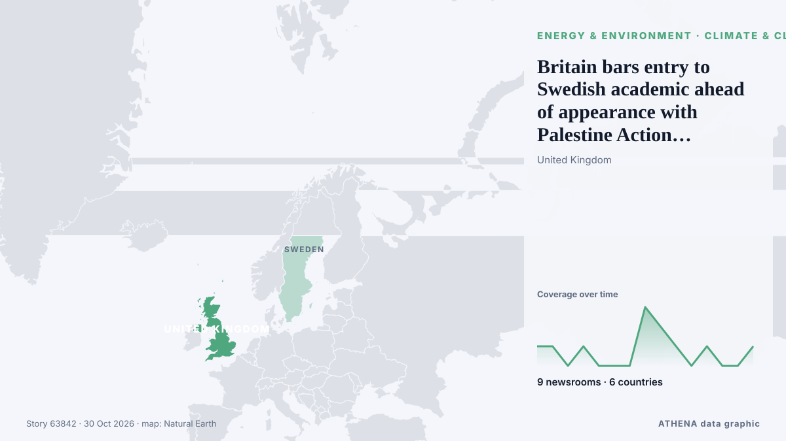

Κλίμα & κλιματική πολιτική
| 17 Οκτ | 0 |
|---|---|
| 18 Οκτ | 0 |
| 19 Οκτ | 0 |
| 20 Οκτ | 0 |
| 21 Οκτ | 2 |
| 22 Οκτ | 0 |
| 23 Οκτ | 0 |
| 24 Οκτ | 0 |
| 25 Οκτ | 3 |
| 26 Οκτ | 0 |
| 27 Οκτ | 1 |
| 28 Οκτ | 3 |
| 29 Οκτ | 0 |
| 30 Οκτ | 2 |
Οι τίτλοι των ειδήσεων παρουσιάζονται στα αγγλικά, όπως δημοσιεύτηκαν.

Britain bars entry to Swedish academic ahead of appearance with Palestine Action founder
LONDON, Oct 30 - Swedish climate academic Andreas Malm said on Friday he had been denied entry to Britain, where he was due to speak alongside the co-founder of Palestine Action, a group banned as a… από The Straits Times
Gombe @30: Yahaya seeks continuity ahead of 2027
By Ben Ngwakwe, Gombe GOMBE — Governor Muhammadu Inuwa Yahaya of Gombe State has called for continuity in governance, political unity and sustained investment in critical sectors as the state marks… από Vanguard
UK Government will stand by funding for carbon capture project – minister
Chief Secretary to the Treasury Emma Reynolds spoke out amid concerns over funding for the Acorn project in Scotland’s north east. από The Irish News (Belfast)
Experts: What China wants from the COP31 climate talks
With the COP31 climate summit in Turkey looming, all eyes are on China to see what the country will push… από Carbon Brief
Call from Stourbridge climate group to be heard by Dudley councillors
Climate group urges people to make sure politicians take their fears seriously at crunch wildfires debate. από Birmingham Mail
Greenhouse gas levels hit new record highs in 2025 - UN
Greenhouse gas concentrations in the atmosphere rose to new record highs in 2025, locking in climate impacts that will persist for centuries to come, the United Nations has said. από RTÉ News